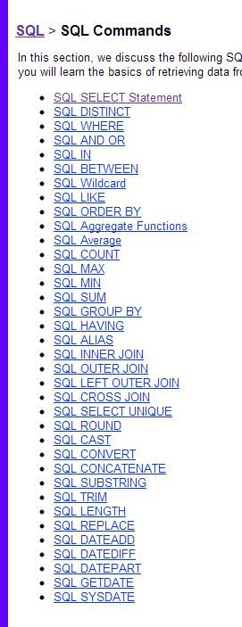
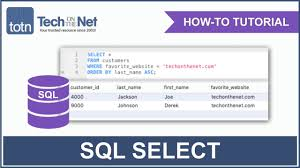

Введение
Язык SQL очень прочно влился в жизнь бизнес-аналитиков и требования к кандидатам благодаря простоте, удобству и распространенности. Из собственного опыта могу сказать, что наиболее часто SQL используется для формирования выгрузок, витрин (с последующим построением отчетов на основе этих витрин) и администрирования баз данных. И поскольку повседневная работа аналитика неизбежно связана с выгрузками данных и витринами, навык написания SQL запросов может стать фактором, из-за которого кандидат или получит преимущество, или будет отсеян. Печальная новость в том, что не каждый может рассчитывать получить его на студенческой скамье. Хорошая новость в том, что в изучении SQL нет ничего сложного, это быстро, а синтаксис запросов прост и понятен. Особенно это касается тех, кому уже доводилось сталкиваться с более сложными языками.
Обучение SQL запросам я разделил на три части. Эта часть посвящена базовому синтаксису, который используется в 80-90% случаев. Следующие две части будут посвящены подзапросам, Join'ам и специальным операторам. Цель гайдов: быстро и на практике отработать синтаксис SQL, чтобы добавить его к арсеналу навыков.
Практика
Введение в синтаксис будет рассмотрено на примере открытой базы данных, предназначенной специально для практики SQL. Чтобы твое обучение прошло максимально эффективно, открой ссылку ниже в новой вкладке и сразу запускай приведенные примеры, это позволит тебе лучше закрепить материал и самостоятельно поработать с синтаксисом.
Кликнуть здесь
После перехода по ссылке можно будет увидеть сам редактор запросов и вывод данных в центральной части экрана, список таблиц базы данных находится в правой части.
Структура sql-запросов
Общая структура запроса выглядит следующим образом:
SELECT ('столбцы или * для выбора всех столбцов; обязательно')
FROM ('таблица; обязательно')
WHERE ('условие/фильтрация, например, city = 'Moscow'; необязательно')
GROUP BY ('столбец, по которому хотим сгруппировать данные; необязательно')
HAVING ('условие/фильтрация на уровне сгруппированных данных; необязательно')
ORDER BY ('столбец, по которому хотим отсортировать вывод; необязательно')
Разберем структуру. Для удобства текущий изучаемый элемент в запроса выделяется CAPS'ом.

SELECT, FROM
SELECT, FROM — обязательные элементы запроса, которые определяют выбранные столбцы, их порядок и источник данных.
Выбрать все (обозначается как *) из таблицы Customers:
SELECT * FROM Customers
Выбрать столбцы CustomerID, CustomerName из таблицы Customers:
SELECT CustomerID, CustomerName FROM Customers
WHERE
WHERE — необязательный элемент запроса, который используется, когда нужно отфильтровать данные по нужному условию. Очень часто внутри элемента where используются IN / NOT IN для фильтрации столбца по нескольким значениям, AND / OR для фильтрации таблицы по нескольким столбцам.
Фильтрация по одному условию и одному значению:
select * from Customers
WHERE City = 'London'
Фильтрация по одному условию и нескольким значениям с применением IN (включение) или NOT IN (исключение):
select * from Customers
where City IN ('London', 'Berlin')
select * from Customers
where City NOT IN ('Madrid', 'Berlin','Bern')
Фильтрация по нескольким условиям с применением AND (выполняются все условия) или OR (выполняется хотя бы одно условие) и нескольким значениям:
select * from Customers
where Country = 'Germany' AND City not in ('Berlin', 'Aachen') AND CustomerID > 15
select * from Customers
where City in ('London', 'Berlin') OR CustomerID > 4
GROUP BY
GROUP BY — необязательный элемент запроса, с помощью которого можно задать агрегацию по нужному столбцу (например, если нужно узнать какое количество клиентов живет в каждом из городов).
При использовании GROUP BY обязательно:
- перечень столбцов, по которым делается разрез, был одинаковым внутри SELECT и внутри GROUP BY,
- агрегатные функции (SUM, AVG, COUNT, MAX, MIN) должны быть также указаны внутри SELECT с указанием столбца, к которому такая функция применяется.
Группировка количества клиентов по городу:
select City, count(CustomerID) from Customers
GROUP BY City
Группировка количества клиентов по стране и городу:
select Country, City, count(CustomerID) from Customers
GROUP BY Country, City
Группировка продаж по ID товара с разными агрегатными функциями: количество заказов с данным товаром и количество проданных штук товара:
select ProductID, COUNT(OrderID), SUM(Quantity) from OrderDetails
GROUP BY ProductID
Группировка продаж с фильтрацией исходной таблицы. В данном случае на выходе будет таблица с количеством клиентов по городам Германии:
select City, count(CustomerID) from Customers
WHERE Country = 'Germany'
GROUP BY City
Переименование столбца с агрегацией с помощью оператора AS. По умолчанию название столбца с агрегацией равно примененной агрегатной функции, что далее может быть не очень удобно для восприятия.
select City, count(CustomerID) AS Number_of_clients from Customers
group by City
HAVING
HAVING — необязательный элемент запроса, который отвечает за фильтрацию на уровне сгруппированных данных (по сути, WHERE, но только на уровень выше).
Фильтрация агрегированной таблицы с количеством клиентов по городам, в данном случае оставляем в выгрузке только те города, в которых не менее 5 клиентов:
select City, count(CustomerID) from Customers
group by City
HAVING count(CustomerID) >= 5
В случае с переименованным столбцом внутри HAVING можно указать как и саму агрегирующую конструкцию count(CustomerID), так и новое название столбца number_of_clients:
select City, count(CustomerID) as number_of_clients from Customers
group by City
HAVING number_of_clients >= 5
Пример запроса, содержащего WHERE и HAVING. В данном запросе сначала фильтруется исходная таблица по пользователям, рассчитывается количество клиентов по городам и остаются только те города, где количество клиентов не менее 5:
select City, count(CustomerID) as number_of_clients from Customers
WHERE CustomerName not in ('Around the Horn','Drachenblut Delikatessend')
group by City
HAVING number_of_clients >= 5
ORDER BY
ORDER BY — необязательный элемент запроса, который отвечает за сортировку таблицы.
Простой пример сортировки по одному столбцу. В данном запросе осуществляется сортировка по городу, который указал клиент:
select * from Customers
ORDER BY City
Осуществлять сортировку можно и по нескольким столбцам, в этом случае сортировка происходит по порядку указанных столбцов:
select * from Customers
ORDER BY Country, City
По умолчанию сортировка происходит по возрастанию для чисел и в алфавитном порядке для текстовых значений. Если нужна обратная сортировка, то в конструкции ORDER BY после названия столбца надо добавить DESC:
select * from Customers
order by CustomerID DESC
Обратная сортировка по одному столбцу и сортировка по умолчанию по второму:
select * from Customers
order by Country DESC, City
JOIN
JOIN — необязательный элемент, используется для объединения таблиц по ключу, который присутствует в обоих таблицах. Перед ключом ставится оператор ON.
Запрос, в котором соединяем таблицы Order и Customer по ключу CustomerID, при этом перед названиям столбца ключа добавляется название таблицы через точку:
select * from Orders
JOIN Customers ON Orders.CustomerID = Customers.CustomerID
Нередко может возникать ситуация, когда надо промэппить одну таблицу значениями из другой. В зависимости от задачи, могут использоваться разные типы присоединений. INNER JOIN — пересечение, RIGHT/LEFT JOIN для мэппинга одной таблицы знаениями из другой,
select * from Orders
join Customers on Orders.CustomerID = Customers.CustomerID
where Customers.CustomerID >10
Внутри всего запроса JOIN встраивается после элемента from до элемента where, пример запроса:
Другие типы JOIN'ов можно увидеть на замечательной картинке ниже: